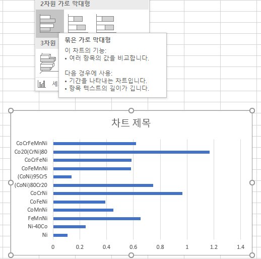
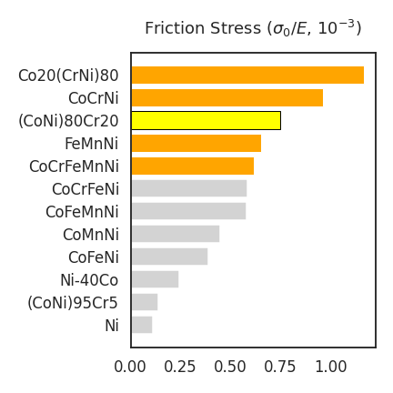
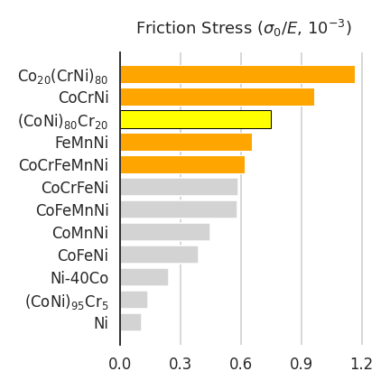
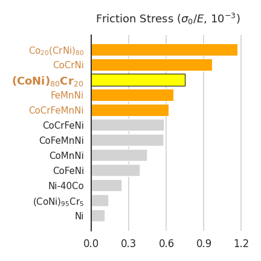

- 초심자를 위한 소재 물성 시각화 tutorial입니다.
- 여러 물질의 friction stress와 elastic modulus 데이터를 읽어들이고,
- 이들의 연산 결과를 막대 그래프로 표현하고 강조하는 과정입니다.
1. 논문 데이터 추출
실제 논문에 출판된 데이터와 그림을 활용합니다.
본 논문은 데이터를 파일로 제공하지 않습니다.
그러나 다행히 데이터 수가 많지 않아 한땀한땀 손으로 정리할 수 있었습니다.
2. 데이터 시각화 @Excel
엑셀에서 데이터를 불러옵니다.
논문의 Figure 5는 friction stress $\sigma_0$을 elastic modulus $E$로 normalize한 값을 그린 것입니다.
불러온 데이터에는 항목이 없으므로 수식을 입력해 만듭니다.
- 셀 하나에 수식을 입력하고 긁으면 모든 소재의 데이터가 생성됩니다.
- 엑셀은 이럴 때 참 편리합니다.
가로 막대 그래프를 그립니다.
원본의 세로 막대 그래프는 소재명이 90º 회전해 있어 읽기 힘들기 때문입니다.
방금 만든 데이터를 기준으로 전체 데이터를 오름차순 정렬합니다.
글자 크기, bar 색상, 윤곽선 색과 굵기 등을 조정합니다.
- 막대를 한 번 클릭하여 전체 막대를 선택 후 전체 색을 바꾼 뒤,
- 해당 막대를 한 번씩 클릭하여 면과 선의 색상을 선택합니다.
- 총 20번 가량 클릭해야 합니다.
- 막대 하나당 막대 + 면 색 + 선 색 + 선 굵기 조정 4회 클릭을 해야 하기 때문입니다.
- 여기서는 Friction Stress가 0.6보다 큰 데이터에 의미가 있고,
- $\text{(CoNi)}_{80}\text{Cr}_{20}$ 데이터가 중요한 데이터라고 가정하고 강조했습니다.
- 과정은 생략했습니다. 캡처하다 지쳤습니다 (…)
3. 데이터 시각화 @Python
- 이와 유사한 그림을 python에서 그립니다.
- 순서는 똑같습니다.
- 데이터를 불러오고, 처리하고, 그림을 그리고, 수정합니다.
3.1. 데이터 불러오기
pandas를 이용해서 데이터를 읽습니다.
pandas는 python에서 사용하는 엑셀 같은 라이브러리입니다.
1
2
3
4import pandas as pd
df_fs = pd.read_excel("frictionstress.xlsx")
df_fs읽은 파일에서 x, y 인자를 뽑아냅니다.
pandas로 읽은 데이터는 컴퓨터가 DataFrame이라는 형식으로 가지고 있습니다.
DataFrame에서 첫번째 열을 가지고 오는 명령은
df.iloc[:, 0].values.copy()입니다.df.iloc[:, 0]: df라는 데이터프레임의 첫번째 열, 모든 행을 선택한다는 뜻입니다.
두 번째, 세 번째 열은열의 위치 - 1을 입력하여 1, 2를 넣습니다..values: index 없이 데이터 값만 가져오라는 뜻입니다..copy(): 사본을 만듭니다. 그렇지 않으면 원본 데이터가 훼손될 수 있습니다.
friction stress를 elastic modulus로 나눠 변수를 생성합니다.
1
2
3
4
5
6
7
8
9
10
11# 합금 이름
alloy = df_fs.iloc[:, 0].values.copy()
# elastic modulus
ela = df_fs.iloc[:, 1].values.copy()
# friction stress
sigma = df_fs.iloc[:, 2].values.copy()
# normalized friction stress
sigma_norm = sigma / ela
3.2. 가로 막대 그래프 그리기
시각화 라이브러리로 matplotlib을 사용합니다.
그 중에서도 그림을 그리는 명령어들이 들어있는
matplotlib.pyplot을 불러옵니다.저 이름을 다 쓰기 힘드니
plt라는 별명을 지어줍니다.한편 seaborn을 사용해서 전체적인 색상과 글꼴 크기를 설정합니다.
seaborn도
sns라는 별명을 지어서 데려옵니다.1
2import matplotlib.pyplot as plt
import seaborn as sns이제 그림을 그립니다.
- 그래프를 그리기 전 도화지를 깔고 네모칸을 치듯 같은 작업을 합니다.
- 도화지는 Figure, 데이터가 들어가는 네모칸은 Axes라고 합니다.
- 각기
fig,ax라고 이름을 지어줍니다. - 이 공간을 한 번에 만드는 명령은
plt.subplots()입니다. - 그림 크기
figsize를(6, 6)으로 지정합니다. 단위는 인치입니다.
- 가로 막대 그래프 명령은
barh(독립변수, 종속변수)입니다. - 가로 막대 그래프이기 때문에 독립변수가 y축에, 종속변수가 x축에 놓입니다.
1
2
3
4
5
6
7
8# 시각화 설정
import seaborn as sns
sns.set_context("talk")
sns.set_style("white")
# 시각화
fig, ax = plt.subplots(figsize=(6, 6))
ax.barh(alloy, sigma_norm)
3.3. 데이터 순서 정렬
- 순서가 들쭉날쭉이라 보기 좋지 않습니다.
- 물질명이나 데이터 순으로 정렬을 해 주면 훨씬 좋아집니다.
- 데이터 크기 순으로 정렬합니다.
pandas에서 정렬하는 명령은
sort_values(정렬할 데이터)입니다.물질명과 데이터를 함께 정렬해야 하기 때문에 DataFrame에
sigma_norm을 추가하고 나서 전체 정렬합니다.1
2
3df_fs["sigma_norm"] = sigma_norm
df_fs = df_fs.sort_values("sigma_norm")
df_fs크기 순으로 잘 정렬되었습니다.
다시 데이터를 뽑아서 다시 그립니다.
1
2
3
4
5alloy = df_fs.iloc[:, 0].values.copy()
sigma_norm = df_fs.iloc[:, 3].values.copy()
fig, ax = plt.subplots(figsize=(6, 6))
ax.barh(alloy, sigma_norm)
3.4. 그래프 꾸미기
- 엑셀에서 막대를 선택할 때는 클릭을 했습니다.
- python에서 막대를 선택할 때는 막대 객체(object)를 부릅니다.
- 여기서 막대를 부르는 명령은
patches()입니다. bars = ax.patches()라는 명령을 내리면 막대들이 list 형식으로 저장됩니다.- 여기에
[순서-1]을 넣어서 특정 막대를 지정합니다. 뒤에서부터 셀 때는 음수로 셉니다.
이렇게 특정한 막대에 색을 칠합니다.
면 색을 칠하는 명령은
set_facecolor()윤곽선을 칠하는 명령은
set_edgecolor()윤곽선 두께를 지정하는 명령은
set_linewidth()입니다.1
2
3
4
5
6
7
8fig, ax = plt.subplots(figsize=(6, 6))
ax.barh(alloy, sigma_norm, fc="lightgray")
# 막대들 모으기
bars = ax.patches
bars[-3].set_facecolor("yellow")
bars[-3].set_edgecolor("k")
bars[-3].set_linewidth(1)노랗게 칠한 위에서 세번째 막대(
bars[-3])외는 모두 회색입니다.ax.barh()에fc='lightgray'를 넣어서 그렇습니다.fc는 facecolor의 약자입니다.
facecolor='lightgray'라고 넣어도 똑같습니다.
- 이제 0.6이 넘는 물질들을 색칠합니다.
- 반복작업에는
for를 사용합니다. for bar in bars라고 하면, bars에 포함된 요소들을 bar라는 이름으로 하나씩 가져옵니다.- 그리고 bar의 길이가 0.6이 넘으면 색을 바꿉니다.
- 조건문은
if입니다.1
2
3
4
5
6
7
8
9
10
11
12
13
14fig, ax = plt.subplots(figsize=(6, 6))
ax.barh(alloy, sigma_norm, fc="lightgray")
# 막대들 모으기
bars = ax.patches
for bar in bars:
if bar.get_width() > 0.6:
bar.set_facecolor("orange")
bar.set_linewidth(1)
bars[-3].set_facecolor("yellow")
bars[-3].set_edgecolor("k")
bars[-3].set_linewidth(1)
3.5. 제목 달기
- 제목을 다는 명령은
set_title()입니다. pad를 넣으면 네모칸(Axes)과 제목 사이 띄우는 거리를 지정합니다.- $\TeX$를 지원합니다. 자세한 사례는 여기를 참고합시다: Link
- 더 자세히 알고 싶으면 여기를 보셔도 좋습니다: Link
- 위 첨자나 그리스어 같은 수학식을 사용할 때는 $ 두 개 사이에 TeX 문법을 사용합니다.
1
2
3
4
5
6
7
8
9
10
11
12
13
14
15
16fig, ax = plt.subplots(figsize=(6, 6))
ax.barh(alloy, sigma_norm, fc="lightgray")
bars = ax.patches
for bar in bars:
if bar.get_width() > 0.6:
bar.set_facecolor("orange")
bar.set_linewidth(1)
bars[-3].set_facecolor("yellow")
bars[-3].set_edgecolor("k")
bars[-3].set_linewidth(1)
# 제목 달기
ax.set_title("Friction Stress ($\sigma_0 / E$, 10$^{-3}$)", pad=20)
3.6. x축 눈금 지정
- 엑셀에서 0부터 0.3 간격으로 1.2까지 x축 눈금을 지정했습니다.
- 우리 그림은 0부터 0.25 간격으로 1.0까지 있고, 그 이상은 눈금이 없습니다.
- x축 눈금 지정 명령은
set_xticks()입니다. 여기에[0. 0.3, 0.6, 0.9, 1.2]를 넣습니다.
- 일일이 치기 귀찮으면 수치 연산을 담당하는 numpy 기능을 사용하면 좋습니다.
import numpy as np로 numpy를 불러오고,xticks= np.linspace(0, 1.2, 5)라고 하면 0에서 1.2까지 5등분한 결과가 들어갑니다.1
2
3
4
5
6
7
8
9
10
11
12
13
14
15
16
17
18
19fig, ax = plt.subplots(figsize=(6, 6))
ax.barh(alloy, sigma_norm, fc="lightgray")
bars = ax.patches
for bar in bars:
if bar.get_width() > 0.6:
bar.set_facecolor("orange")
bar.set_linewidth(1)
bars[-3].set_facecolor("yellow")
bars[-3].set_edgecolor("k")
bars[-3].set_linewidth(1)
ax.set_title("Friction Stress ($\sigma_0 / E$, 10$^{-3}$)", pad=20)
# x축 눈금 지정
xticks = np.linspace(0, 1.2, 5)
ax.set_xticks(xticks)
3.7. 엑셀 재현은 여기까지.
- 여기까지 엑셀에서 만든 그림을 재현했습니다.
- 잘 몰라도 클릭을 하면 메뉴가 화면에 떠서 찾아볼 수 있는 엑셀이랑 좀 다릅니다.
- 명령어를 알아야 그림을 고칠 수 있고 타이핑을 해야 하기 때문에 적잖이 불편할 수도 있습니다.
- 하지만 코딩의 장점은 자동화에 있습니다.
- 같은 작업을 여러번 해야 한다면 엑셀에서 여는 것보다 코드를 저장해두는 편이 이득입니다.
4. 엑셀을 넘어서
- 엑셀의 표현력을 뛰어넘어 봅시다.
- 텍스트에 아래 첨자를 넣고
- 텍스트마다 다른 색을 칠합니다.
- 찾아보니 엑셀에서 안 되는 건 아닌 듯 한데 많이 성가신 듯 합니다. (쉽게 하시는 분 제보주세요)
4.1. 테두리 제거, 배경 눈금 추가
- 네모난 테두리 중 맨 왼쪽을 제외하면 쓸모가 없습니다.
- 필요가 없는 것은 과감히 지웁니다.
- 테두리는
spines라고 부르고, 안 보이는 명령은set_visible(False)입니다.
- 배경 눈금을 넣는 명령은
grid입니다. - x축 눈금에서 올리는 눈금이므로
axis='x'를 넣습니다.1
2
3
4
5
6
7
8
9
10
11
12
13
14
15
16
17
18
19
20
21
22
23fig, ax = plt.subplots(figsize=(6, 6))
ax.barh(alloy, sigma_norm, fc="lightgray")
bars = ax.patches
for bar in bars:
if bar.get_width() > 0.6:
bar.set_facecolor("orange")
bar.set_linewidth(1)
bars[-3].set_facecolor("yellow")
bars[-3].set_edgecolor("k")
bars[-3].set_linewidth(1)
ax.set_title("Friction Stress ($\sigma_0 / E$, 10$^{-3}$)", pad=20)
xticks = np.linspace(0, 1.2, 5)
ax.set_xticks(xticks)
# 테두리 지우기
ax.spines[["top", "right", "bottom"]].set_visible(False)
# 눈금 넣기
ax.grid(axis="x")
4.2. 물질명 아래첨자 추가
- 맨 위 물질명이 $\text{Co20(CrNi)80}$이라고 되어 있는데,
- 20과 80은 조성을 표현하는 숫자이므로 $\text{Co}_{20}\text{(CrNi)}_{80}$ 이어야 합니다.
- 독립변수인 alloy에서 아래첨자가 적용될 것들을 바꾼 뒤
set_yticklabels()로 넣으면 적용됩니다. - 이 때 눈금 레이블이 붙을 자리를 알려주는
set_yticks()가 함께 가야 합니다.1
2
3
4
5
6
7
8
9
10
11
12
13
14
15
16
17
18
19
20
21
22
23
24
25
26
27
28
29fig, ax = plt.subplots(figsize=(6, 6))
ax.barh(alloy, sigma_norm, fc="lightgray")
bars = ax.patches
for bar in bars:
if bar.get_width() > 0.6:
bar.set_facecolor("orange")
bar.set_linewidth(1)
bars[-3].set_facecolor("yellow")
bars[-3].set_edgecolor("k")
bars[-3].set_linewidth(1)
ax.set_title("Friction Stress ($\sigma_0 / E$, 10$^{-3}$)", pad=20)
xticks = np.linspace(0, 1.2, 5)
ax.set_xticks(xticks)
ax.spines[["top", "right", "bottom"]].set_visible(False)
ax.grid(axis="x")
# alloy 이름에 아래첨자 추가
yticks = ax.get_yticks()
yticklabels = alloy
yticklabels[1] = "(CoNi)$_{95}$Cr$_5$"
yticklabels[-3] = "(CoNi)$_{80}$Cr$_{20}$"
yticklabels[-1] = "Co$_{20}$(CrNi)$_{80}$"
ax.set_yticks(yticks)
ax.set_yticklabels(yticklabels)
4.3. 물질 이름 글꼴 색, 크기
- 특정 막대만 다시 칠했던 것과 같은 요령으로 특정 글자만 색을 바꿉니다.
1
2
3
4
5
6
7
8
9
10
11
12
13yticks = ax.get_yticks()
yticklabels = ax.get_yticklabels()
# 물질 이름 색상, 크기 수정
for bar, ytl in zip(bars, yticklabels):
if bar.get_width() > 0.6:
ytl.set_color("peru")
ytl.set_fontsize("small")
yticklabels[-3].set_fontweight("bold")
yticklabels[-3].set_fontsize("medium")
display(fig)
4.4. 그림을 파일로 저장
- 파일을 그림으로 저장하기도 수월합니다.
fig.savefig(파일명)을 하면 되는데,fig.tight_layout()을 붙여 주면 그림이 잘리는 일이 예방됩니다.1
2fig.tight_layout()
fig.savefig("matprop.png")
4.5. 마치며
- 엑셀에서 그릴 수 있는 그림을 굳이 파이썬으로 그렸습니다.
- 파이썬을 처음 접하는 분들께는 낯설고 험한 길일 수 있습니다.
- 그러나 처음의 고비를 넘으면 엑셀에서는 상상도 못할 그림을 그릴 수 있습니다.
- 위 그림은 Nicolas Rougier라는 분이 Matplotlib으로 그린 그림입니다.
- 뚜벅뚜벅, 남들과 다른 퀄리티를 향해 한 걸음 떼어보시기 바랍니다.